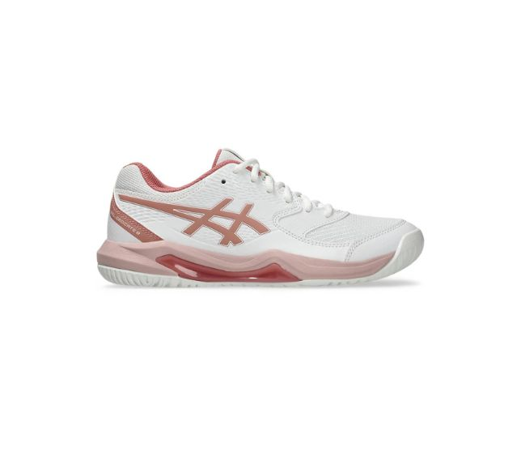
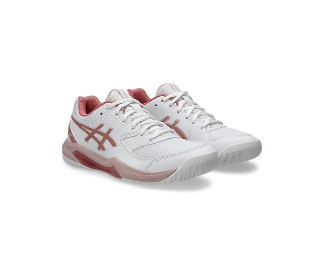
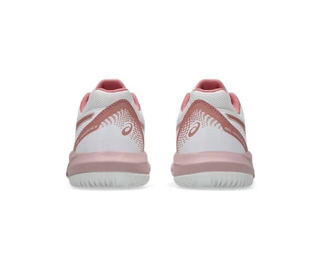

Categories/Tennis/Product



Asics Gel Dedicate 8 Rose Tennis Shoe
$139.95
Size:
QTY:
1
Description
The Gel Dedicate 8 Tennis Shoe is an all round performer with an all court outsole for good grip on the court. This is a stable shoe with a flexible feel for beginners or social players. The upper has synthetic leather reinforcement in the side panels, improving the midfoot hold for laterial movements.
A TRUSSTIC support unit and wrap-up outsole improve stabiity and directional movement.
GEL Technology cushioning provides excellent shock absorption.
Colour: White/Rose Rouge